6 - Os DAGs assombrados & O Terror Causal¶
import numpy as np
import matplotlib.pyplot as plt
import pandas as pd
from videpy import Vide
import networkx as nx
# from causalgraphicalmodels import CausalGraphicalModel
import stan
import nest_asyncio
plt.style.use('default')
plt.rcParams['axes.facecolor'] = 'lightgray'
# To DAG's
import daft
from causalgraphicalmodels import CausalGraphicalModel
# To running the stan in jupyter notebook
nest_asyncio.apply()
RCode 6.1 - Pag 162¶
np.random.seed(1914)
N = 200
p = 0.1
# Não correlacionado noticiabilidade(newsworthiness) e confiabilidade(trustworthiness)
nw = np.random.normal(0, 1, N)
tw = np.random.normal(0, 1, N)
# Selecionando os 10% melhores
s = nw + tw # Score total
q = np.quantile(s, 1-p) # Top 10%
selected = [ True if s_i >= q else False for s_i in s ]
print('Noticiabilidade(newsworthiness): \n\n', nw[selected], '\n\n')
print('Confiabilidade(trustworthiness):\n\n', tw[selected], '\n\n')
print('Correlação: ', np.correlate(tw[selected], nw[selected]))
Noticiabilidade(newsworthiness):
[ 0.82456357 1.85614543 0.85556981 1.4066898 1.6026727 1.42256068
0.71166144 1.30222516 0.56454812 3.02039213 0.93879118 1.04202561
-0.4640972 0.12272254 1.99579665 1.59807671 1.82853378 1.15394068
1.48966066 1.22640255]
Confiabilidade(trustworthiness):
[ 1.24510334 1.29709756 2.10293057 0.66088341 1.76728533 0.64448519
1.17598088 0.35356094 1.08805257 -0.72327249 1.31462133 1.54253157
2.8128998 1.51862223 1.18048237 2.31948695 -0.09763283 0.87205345
0.74979249 0.46329186]
Correlação: [19.93737242]
plt.figure(figsize=(17, 6))
plt.scatter(tw, nw, s=6, color='gray')
plt.scatter(tw[selected], nw[selected], s=7, color='blue')
plt.title('Figure 6.1 - Pag162')
plt.xlabel('Noticiabilidade ($newsworthiness$)')
plt.ylabel('Confiabilidade ($trustworthiness$)')
plt.grid(ls='--', color='white', alpha=0.3)
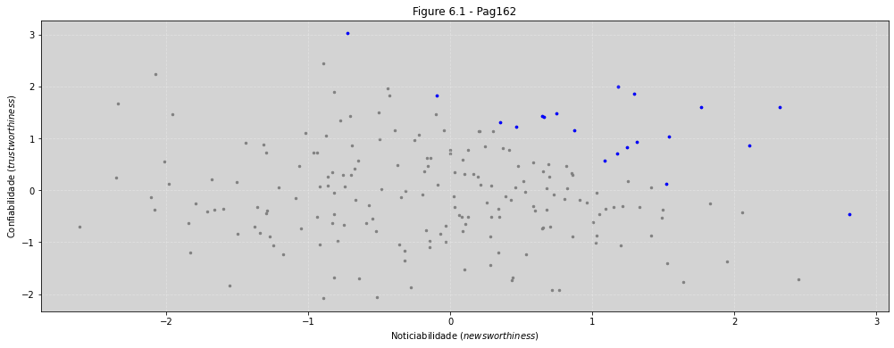
RCode 6.2 - pag163¶
N = 100
np.random.seed(909) # Teste com outras sementes
height = np.random.normal(10, 2, N)
leg_proportion = np.random.uniform(0.4, 0.5, N)
leg_left = np.random.left = leg_proportion * height + np.random.normal(0, 0.02, N)
leg_right = np.random.left = leg_proportion * height + np.random.normal(0, 0.02, N)
df = pd.DataFrame({'height': height,
'leg_left': leg_left,
'leg_right': leg_right})
df.head()
| height | leg_left | leg_right | |
|---|---|---|---|
| 0 | 8.463728 | 4.094675 | 4.078446 |
| 1 | 9.854070 | 4.776475 | 4.687749 |
| 2 | 8.668694 | 4.192607 | 4.256472 |
| 3 | 7.523768 | 3.088674 | 3.088206 |
| 4 | 9.381352 | 4.093217 | 4.048181 |
plt.figure(figsize=(17, 6))
plt.scatter(leg_right, leg_left, s=5, alpha=0.3)
plt.title('Dados dos legs')
plt.xlabel('Leg Right')
plt.ylabel('Leg Left')
plt.grid(ls='--', color='white', alpha=0.4)
plt.show()
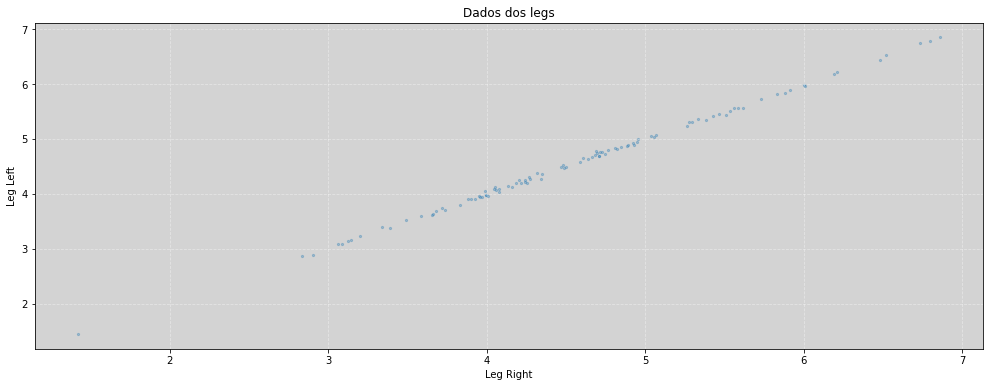
plt.figure(figsize=(17, 6))
plt.hist(df.height, rwidth=0.9, density=True)
plt.grid(ls='--', color='white', alpha=0.4)
plt.show()
plt.figure(figsize=(17, 6))
plt.hist(df.leg_left, rwidth=0.9, density=True, alpha=0.5)
plt.hist(df.leg_right, rwidth=0.9, density=True, alpha=0.5)
plt.grid(ls='--', color='white', alpha=0.4)
plt.show()
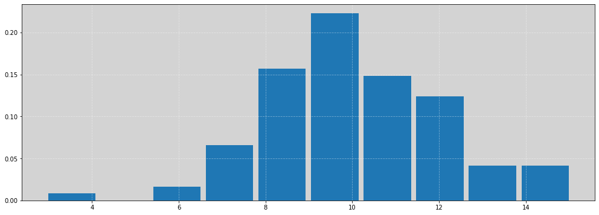
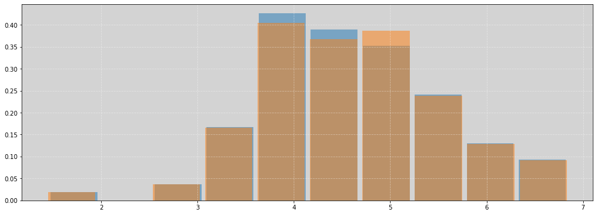
model = """
data {
int<lower=0> N;
vector[N] height;
vector[N] leg_left;
vector[N] leg_right;
}
parameters {
real alpha;
real beta_left;
real beta_right;
real<lower=0> sigma;
}
model {
alpha ~ normal(10, 100);
beta_left ~ normal(2, 10);
beta_right ~ normal(2, 10);
sigma ~ exponential(1);
height ~ normal(alpha + beta_left * leg_left + beta_right * leg_right, sigma);
}
"""
data = {
'N': N,
'height': height,
'leg_left': leg_left,
'leg_right': leg_right
}
posteriori = stan.build(model, data=data)
samples = posteriori.sample(num_chains=4, num_samples=1000)
alpha = samples['alpha'].flatten()
beta_left = samples['beta_left'].flatten()
beta_right = samples['beta_right'].flatten()
sigma = samples['sigma'].flatten()
RCode 6.4 - pag164¶
Vide.summary(samples)
| mean | std | 7.0% | 93.0% | |
|---|---|---|---|---|
| alpha | 0.94 | 0.33 | 0.29 | 1.48 |
| beta_left | -1.38 | 2.08 | -5.23 | 2.34 |
| beta_right | 3.38 | 2.06 | -0.21 | 7.31 |
| sigma | 0.66 | 0.05 | 0.58 | 0.74 |
Vide.plot_forest(samples, title='Leg right & Leg left')
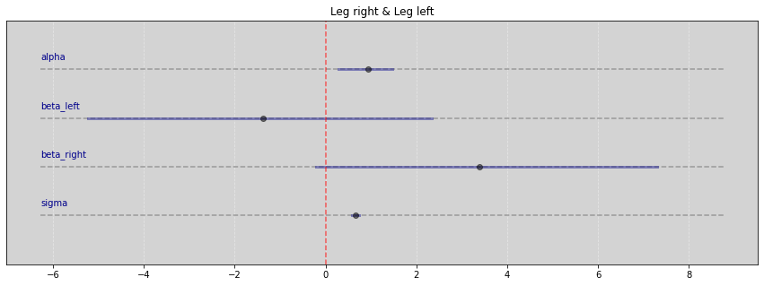
RCode 6.5 - pag164¶
plt.figure(figsize=(17, 6))
plt.scatter(beta_right, beta_left, s=5, alpha=0.3)
plt.title('Posteriori Beta legs')
plt.xlabel('Beta Right')
plt.ylabel('Beta Left')
plt.grid(ls='--', color='white', alpha=0.4)
plt.show()
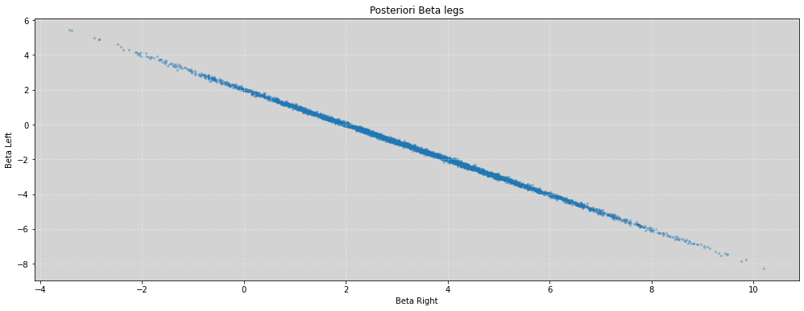
RCode 6.6 - pag 165¶
plt.figure(figsize=(17, 6))
plt.hist((beta_left + beta_right), density=True, alpha=0.8, bins=100, rwidth=0.9)
plt.title('Posteriori')
plt.xlabel('Soma de Beta_left e beta_right')
plt.ylabel('Densidade')
plt.grid(ls='--', color='white', alpha=0.4)
plt.show()
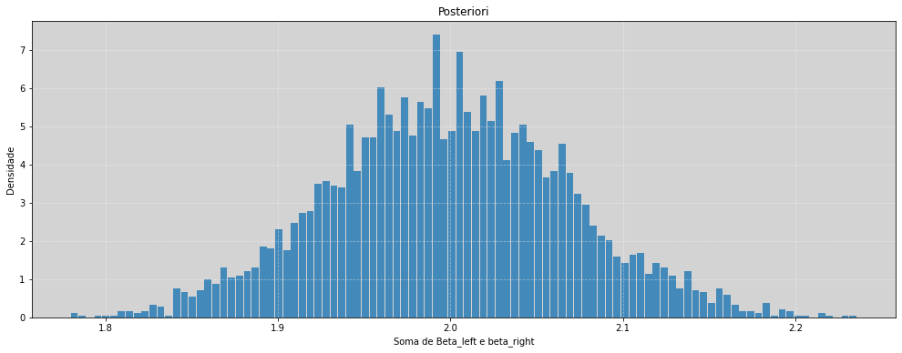
# Comparação com os beta indivíduais
plt.figure(figsize=(17, 6))
plt.hist(beta_left, density=True, alpha=0.8, bins=100, rwidth=0.9) # Beta left
plt.hist(beta_right, density=True, alpha=0.8, bins=100, rwidth=0.9) # Beta Right
plt.title('Comparativo entre as Posterioris de Beta Left e Beta Right')
plt.xlabel('Betas')
plt.ylabel('Densidade')
plt.grid(ls='--', color='white', alpha=0.1)
plt.show()
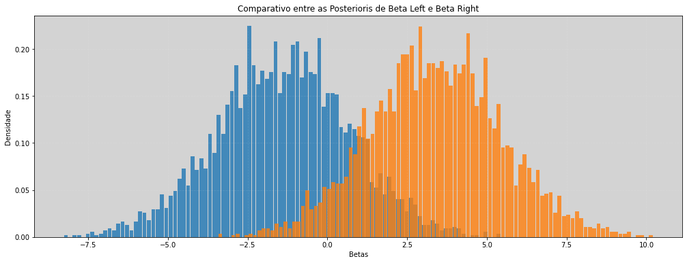
RCode 6.7 - Pag 166¶
model = """
data {
int N;
vector[N] leg_left;
vector[N] height;
}
parameters {
real alpha;
real beta_left;
real sigma;
}
model {
alpha ~ normal(10, 100);
beta_left ~ normal(2, 10);
sigma ~ exponential(1);
height ~ normal(alpha + beta_left * leg_left, sigma);
}
"""
data = {
'N': len(height),
'leg_left': leg_left,
'height': height,
}
posteriori = stan.build(model, data=data)
samples = posteriori.sample(num_chains=4, num_samples=1000)
alpha = samples['alpha'].flatten()
beta_left = samples['beta_left'].flatten()
sigma = samples['sigma'].flatten()
# RCode 6.7 - Continuação
Vide.summary(samples)
| mean | std | 7.0% | 93.0% | |
|---|---|---|---|---|
| alpha | 0.83 | 0.33 | 0.28 | 1.43 |
| beta_left | 2.02 | 0.07 | 1.90 | 2.14 |
| sigma | 0.67 | 0.05 | 0.58 | 0.75 |
Vide.plot_forest(samples, title='Leg Left')
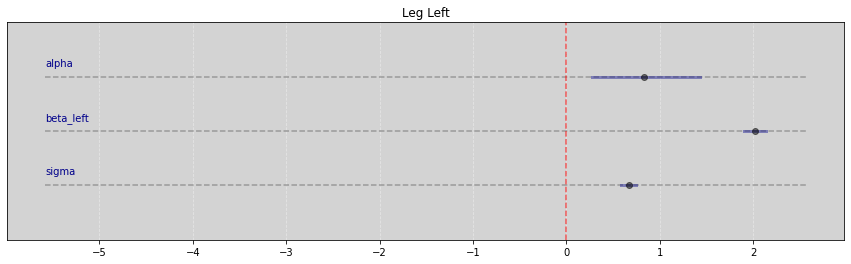
R Code 6.8¶
df = pd.read_csv('data/milk.csv', sep=';')
df_std = df[['kcal.per.g', 'perc.fat', 'perc.lactose']].copy()
df_std['kcal.per.g'] = (df_std['kcal.per.g'] - df_std['kcal.per.g'].mean()) / df_std['kcal.per.g'].std()
df_std['perc.fat'] = (df_std['perc.fat'] - df_std['perc.fat'].mean()) / df_std['perc.fat'].std()
df_std['perc.lactose'] = (df_std['perc.lactose'] - df_std['perc.lactose'].mean()) / df_std['perc.lactose'].std()
df_std.head()
| kcal.per.g | perc.fat | perc.lactose | |
|---|---|---|---|
| 0 | -0.940041 | -1.217243 | 1.307262 |
| 1 | -0.816126 | -1.030355 | 1.011285 |
| 2 | -1.125913 | -1.391531 | 1.382679 |
| 3 | -1.001998 | -1.335535 | 1.586874 |
| 4 | -0.258511 | -0.469693 | 0.257115 |
# Não tem nenhum 'missing values'
df_std.isna().sum()
kcal.per.g 0
perc.fat 0
perc.lactose 0
dtype: int64
R Code 6.9 - Pag 167¶
# kcal.per.g regredido em perc.fat
model_kf = """
data {
int N;
vector[N] outcome;
vector[N] predictor;
}
parameters {
real alpha;
real beta;
real<lower=0> sigma;
}
model {
alpha ~ normal(0, 0.2);
beta ~ normal(0, 0.5);
sigma ~ exponential(1);
outcome ~ normal(alpha + beta * predictor, sigma);
}
"""
data_kf = {
'N': len(df_std['kcal.per.g']),
'outcome': list(df_std['kcal.per.g'].values),
'predictor': list(df_std['perc.fat'].values),
}
posteriori_kf = stan.build(model_kf, data=data_kf)
samples_kf = posteriori_kf.sample(num_chains=4, num_samples=1000)
# kcal.per.g regredido em perc.lactose
model_kl = """
data {
int N;
vector[N] outcome;
vector[N] predictor;
}
parameters {
real alpha;
real beta;
real<lower=0> sigma;
}
model {
alpha ~ normal(0, 0.2);
beta ~ normal(0, 0.5);
sigma ~ exponential(1);
outcome ~ normal(alpha + beta * predictor, sigma);
}
"""
data_kl = {
'N': len(df_std['kcal.per.g']),
'outcome': df_std['kcal.per.g'].values,
'predictor': df_std['perc.lactose'].values,
}
posteriori_kl = stan.build(model_kl, data=data_kl)
samples_kl = posteriori_kl.sample(num_chains=4, num_samples=1000)
Vide.summary(samples_kf)
| mean | std | 7.0% | 93.0% | |
|---|---|---|---|---|
| alpha | 0.00 | 0.08 | -0.14 | 0.16 |
| beta | 0.86 | 0.09 | 0.68 | 1.02 |
| sigma | 0.49 | 0.07 | 0.37 | 0.62 |
Vide.plot_forest(samples_kf, title='perc.fat')
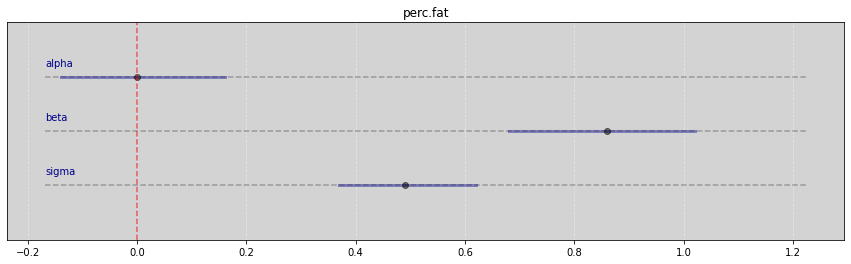
Vide.summary(samples_kl)
| mean | std | 7.0% | 93.0% | |
|---|---|---|---|---|
| alpha | 0.00 | 0.07 | -0.12 | 0.14 |
| beta | -0.90 | 0.08 | -1.05 | -0.77 |
| sigma | 0.41 | 0.06 | 0.31 | 0.52 |
Vide.plot_forest(samples_kl, title='perc.lactose')
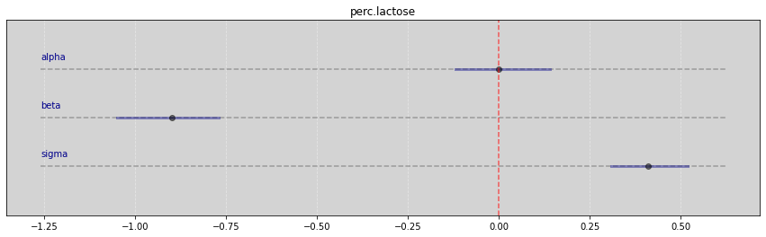
R Code 6.10 - pag 167¶
model = """
data {
int N;
vector[N] F; // Fat
vector[N] L; // Lactose
vector[N] K; // kcal/g
}
parameters {
real alpha;
real bF;
real bL;
real sigma;
}
model {
alpha ~ normal(0, 0.2);
bF ~ normal(0, 0.5);
bL ~ normal(0, 0.5);
sigma ~ exponential(1);
K ~ normal(alpha + bF*F + bL*L, sigma);
}
"""
data = {
'N': len(df_std['kcal.per.g']),
'F': df_std['perc.fat'].values,
'L': df_std['perc.lactose'].values,
'K': df_std['kcal.per.g'].values,
}
posteriori_FL = stan.build(model, data=data)
samples_FL = posteriori_FL.sample(num_chains=4, num_samples=1000)
Vide.summary(samples_FL)
| mean | std | 7.0% | 93.0% | |
|---|---|---|---|---|
| alpha | -0.00 | 0.07 | -0.13 | 0.12 |
| bF | 0.25 | 0.19 | -0.11 | 0.58 |
| bL | -0.66 | 0.19 | -1.00 | -0.31 |
| sigma | 0.41 | 0.06 | 0.31 | 0.51 |
Vide.plot_forest(samples_FL, title='Perc.Fat & Perc.Lactose')
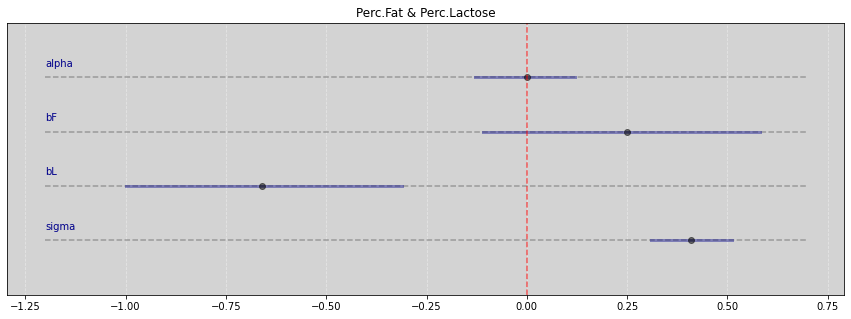
R Code 6.11 - Pag 168 - Figure 6.3¶
pd.plotting.scatter_matrix(df_std, diagonal='hist', grid=True, figsize=(17, 6))
plt.show()
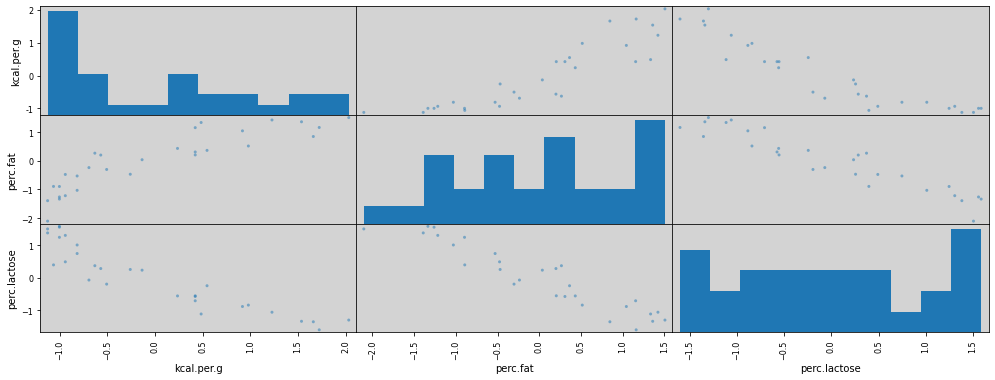
R Code 6.12 - Overthinking - Rever¶
model = """
data {
int N;
vector[N] kcal_per_g;
vector[N] perc_fat;
vector[N] new_predictor_X;
}
parameters {
real alpha;
real bF;
real bX;
real<lower=0> sigma;
}
model {
kcal_per_g ~ normal(alpha + bF * perc_fat + bX * new_predictor_X, sigma);
}
"""
def generate_predictor_x(r=0.9):
N = len(df['perc.fat'].values)
mean = r * df['perc.fat'].values
sd = np.sqrt((1 - r**2) * np.var(df['perc.fat'].values))
return np.random.normal(mean, sd, N) # New Predictor X
def generate_data_dict(r=0.9):
data = {
'N': len(df['kcal.per.g']),
'kcal_per_g': df['kcal.per.g'].values,
'perc_fat': df['perc.fat'].values,
'new_predictor_X': generate_predictor_x(r=r),
}
return data
def adjust_model(r=0.9):
parameter_mean_samples = []
for _ in range(1): # In book running 100x
# Runnning the model
posteriori = stan.build(model, data=generate_data_dict(r=r))
samples = posteriori.sample(num_chains=4, num_samples=1000)
# Get parameter slope mean
parameter_mean_samples.append(samples['bF'].flatten().mean())
return parameter_mean_samples
stddev = []
r_sequence = np.arange(0, 0.99, 0.1) # In book using 0.01
for r in r_sequence:
parameter = adjust_model(r=r)
stddev.append(np.mean(parameter))
plt.figure(figsize=(17, 6))
plt.plot(r_sequence, stddev)
plt.xlabel("correlation", fontsize=14)
plt.ylabel("stddev", fontsize=14)
plt.show()
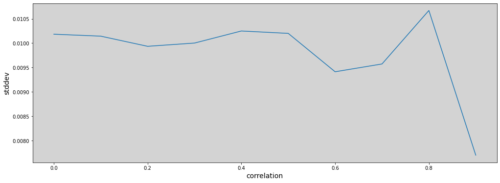
R Code 6.13¶
np.random.seed(3)
# Quantidade de plantas
N = 100
# Simulação inicial das alturas
h0 = np.random.normal(10, 2, N)
# Atribuindo tratamentos e simulando fungos e tratamentos
treatment = np.repeat([0,1], repeats=int(N/2))
fungus = np.random.binomial(n=1, p=(0.5 - treatment*0.4), size=N)
h1 = h0 + np.random.normal(5 - 3*fungus, 1, N)
# Dataframe
d = pd.DataFrame.from_dict({'h0': h0,
'h1': h1,
'treatment': treatment,
'fungus': fungus})
d.describe().T
| count | mean | std | min | 25% | 50% | 75% | max | |
|---|---|---|---|---|---|---|---|---|
| h0 | 100.0 | 9.782726 | 2.138707 | 4.168524 | 8.279903 | 9.642072 | 11.353860 | 14.316299 |
| h1 | 100.0 | 14.209396 | 2.766929 | 6.881795 | 12.512818 | 14.190085 | 15.688766 | 20.786965 |
| treatment | 100.0 | 0.500000 | 0.502519 | 0.000000 | 0.000000 | 0.500000 | 1.000000 | 1.000000 |
| fungus | 100.0 | 0.270000 | 0.446196 | 0.000000 | 0.000000 | 0.000000 | 1.000000 | 1.000000 |
R Code 6.14¶
sim_p = np.random.lognormal(0, 0.25, int(1e4))
pd.DataFrame(sim_p, columns=['sim_p']).describe().T
| count | mean | std | min | 25% | 50% | 75% | max | |
|---|---|---|---|---|---|---|---|---|
| sim_p | 10000.0 | 1.02366 | 0.259148 | 0.391611 | 0.83898 | 0.993265 | 1.174575 | 2.781105 |
R Code 6.15¶
Modelo:
\[ h_{1,i} \sim Normal(\mu_i, \sigma) \]
\[ \mu_i = h_{0, i} \times p \]
Prioris:
\[ p \sim LogNormal(0, 0.25) \]
\[ sigma \sim Exponential(1) \]
model = """
data {
int N;
vector[N] h1;
vector[N] h0;
}
parameters {
real<lower=0> p;
real<lower=0> sigma;
}
model {
vector[N] mu;
mu = h0 * p;
h1 ~ normal(mu, sigma);
// Prioris
p ~ lognormal(0, 0.25);
sigma ~ exponential(1);
}
"""
data = {
'N': N,
'h1': h1,
'h0': h0,
}
posteriori = stan.build(model, data=data)
samples = posteriori.sample(num_chains=4, num_samples=1000)
Vide.summary(samples)
| mean | std | 7.0% | 93.0% | |
|---|---|---|---|---|
| p | 1.43 | 0.02 | 1.40 | 1.46 |
| sigma | 1.99 | 0.15 | 1.72 | 2.25 |
RCode 6.16¶
Modelo post-treatment bias:
\[ h_{1, i} \sim Normal(\mu_i, \sigma) \]
\[ \mu_i = h_{0, i} \times p \]
\[ p = \alpha + \beta_T T_i + \beta_F F_i \]
prioris:
\[ \alpha \sim LogNormal(0, 0.25) \]
\[ \beta_T \sim Normal(0, 0.5) \]
\[ \beta_F \sim Normal(0, 0.5) \]
\[ \sigma \sim Exponential(1) \]
"""
To mu definition below
----------------------
vector[N] a;
vector[N] b;
vector[N] c;
These operation:
c = a .* b;
Is the same operation:
for (n in 1:N) {
c[n] = a[n] * b[n];
}
Reference:
https://mc-stan.org/docs/reference-manual/arithmetic-expressions.html
"""
model = """
data {
int N;
vector[N] h0;
vector[N] h1;
vector[N] T; // Treatment
vector[N] F; // Fungus
}
parameters {
real alpha;
real bT;
real bF;
real<lower=0> sigma;
}
model {
vector[N] mu;
vector[N] p;
p = alpha + bT * T + bF * F;
mu = h0 .* p;
// likelihood
h1 ~ normal(mu, sigma);
// prioris
alpha ~ lognormal(0, 0.25);
bT ~ normal(0, 0.5);
bF ~ normal(0, 0.5);
sigma ~ exponential(1);
}
"""
data = {
'N': N,
'h0': h0,
'h1': h1,
'T': treatment,
'F': fungus,
}
posteriori = stan.build(model, data=data)
samples = posteriori.sample(num_chains=4, num_samples=1000)
Vide.summary(samples)
| mean | std | 7.0% | 93.0% | |
|---|---|---|---|---|
| alpha | 1.53 | 0.03 | 1.48 | 1.59 |
| bT | -0.03 | 0.04 | -0.09 | 0.03 |
| bF | -0.32 | 0.04 | -0.39 | -0.25 |
| sigma | 1.44 | 0.11 | 1.26 | 1.64 |
Vide.plot_forest(samples, title='Treatment and Fungus')

R Code 6.17¶
model = """
data {
int N;
vector[N] h0;
vector[N] h1;
vector[N] T; // Treatment
}
parameters {
real<lower=0> alpha;
real bT;
real<lower=0> sigma;
}
model {
vector[N] mu;
vector[N] p;
p = alpha + bT * T;
mu = h0 .* p;
h1 ~ normal(mu, sigma);
alpha ~ lognormal(0, 0.2);
bT ~ normal(0, 0.5);
sigma ~ exponential(1);
}
"""
data = {
'N': N,
'h0': h0,
'h1': h1,
'T': treatment,
}
posteriori = stan.build(model, data=data)
samples = posteriori.sample(num_chains=4, num_samples=1000)
Vide.summary(samples)
| mean | std | 7.0% | 93.0% | |
|---|---|---|---|---|
| alpha | 1.36 | 0.03 | 1.31 | 1.41 |
| bT | 0.13 | 0.04 | 0.06 | 0.20 |
| sigma | 1.89 | 0.14 | 1.65 | 2.14 |
Vide.plot_forest(samples, title='Treatment without fungus')
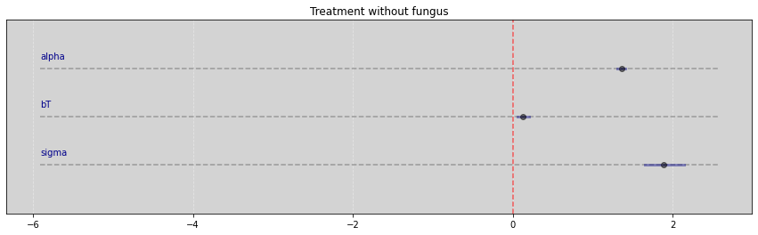
R Code 6.18¶
G = nx.DiGraph()
nodes = {0: '$H_0$',
1: '$H_1$',
2: 'F',
3: 'T'}
for i in nodes:
G.add_node(nodes[i])
edges = [(nodes[0], nodes[1]),
(nodes[2], nodes[1]),
(nodes[3], nodes[2])]
G.add_edges_from(edges)
# explicitly set positions
pos = {nodes[0]: (0, 0),
nodes[1]: (1, 0),
nodes[2]: (1.5, 0),
nodes[3]: (2, 0)}
options = {
"font_size": 15,
"node_size": 400,
"node_color": "white",
"edgecolors": "white",
"linewidths": 1,
"width": 1,
}
nx.draw(G, pos, with_labels=True, **options)
# Set margins for the axes so that nodes aren't clipped
ax = plt.gca()
# ax.margins(0.01)
plt.axis("off")
plt.show()
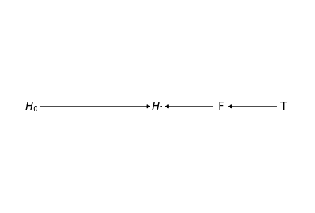
R Code 6.20¶
# np.random.seed(3)
# Quantidade de plantas
N = 100
# Simulação inicial das alturas
h0 = np.random.normal(10, 2, N)
# Atribuindo tratamentos e simulando fungos e tratamentos
treatment = np.repeat([0, 1], repeats=int(N/2))
M = np.random.binomial(n=1, p=0.5, size=N) # Moisture -> Bernoulli(p=0.5)
fungus = np.random.binomial(n=1, p=(0.5 - treatment * 0.4 + 0.4 * M), size=N)
h1 = h0 + np.random.normal((5 + 3 * M), 1, N)
# Dataframe
d2 = pd.DataFrame.from_dict({'h0': h0,
'h1': h1,
'treatment': treatment,
'fungus': fungus})
d2.describe().T
| count | mean | std | min | 25% | 50% | 75% | max | |
|---|---|---|---|---|---|---|---|---|
| h0 | 100.0 | 10.091610 | 1.976358 | 6.313914 | 8.850678 | 10.169278 | 11.369749 | 15.273222 |
| h1 | 100.0 | 16.510702 | 2.715874 | 10.105379 | 14.711143 | 15.899131 | 18.671828 | 22.662508 |
| treatment | 100.0 | 0.500000 | 0.502519 | 0.000000 | 0.000000 | 0.500000 | 1.000000 | 1.000000 |
| fungus | 100.0 | 0.480000 | 0.502117 | 0.000000 | 0.000000 | 0.000000 | 1.000000 | 1.000000 |
# RCode 6.17 with new database
model = """
data {
int N;
vector[N] h0;
vector[N] h1;
vector[N] T; // Treatment
}
parameters {
real<lower=0> alpha;
real bT;
real<lower=0> sigma;
}
model {
vector[N] mu;
vector[N] p;
p = alpha + bT * T;
mu = h0 .* p;
h1 ~ normal(mu, sigma);
alpha ~ lognormal(0, 0.2);
bT ~ normal(0, 0.5);
sigma ~ exponential(1);
}
"""
data = {
'N': N,
'h0': d2.h0.values,
'h1': d2.h1.values,
'T': d2.treatment.values,
}
posteriori = stan.build(model, data=data)
samples = posteriori.sample(num_chains=4, num_samples=1000)
Vide.summary(samples)
| mean | std | 7.0% | 93.0% | |
|---|---|---|---|---|
| alpha | 1.60 | 0.03 | 1.55 | 1.65 |
| bT | 0.02 | 0.04 | -0.05 | 0.09 |
| sigma | 2.16 | 0.15 | 1.87 | 2.43 |
Vide.plot_forest(samples, title="Only Treatment using d2")
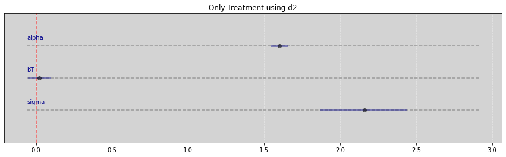
# RCode 6.16 with new database
model = """
data {
int N;
vector[N] h0;
vector[N] h1;
vector[N] T; // Treatment
vector[N] F; // Fungus
}
parameters {
real alpha;
real bT;
real bF;
real<lower=0> sigma;
}
model {
vector[N] mu;
vector[N] p;
p = alpha + bT * T + bF * F;
mu = h0 .* p;
// likelihood
h1 ~ normal(mu, sigma);
// prioris
alpha ~ lognormal(0, 0.25);
bT ~ normal(0, 0.5);
bF ~ normal(0, 0.5);
sigma ~ exponential(1);
}
"""
data = {
'N': N,
'h0': d2.h0.values,
'h1': d2.h1.values,
'T': d2.treatment.values,
'F': d2.fungus.values,
}
posteriori = stan.build(model, data=data)
samples = posteriori.sample(num_chains=4, num_samples=1000)
Vide.summary(samples)
| mean | std | 7.0% | 93.0% | |
|---|---|---|---|---|
| alpha | 1.53 | 0.04 | 1.46 | 1.60 |
| bT | 0.06 | 0.04 | -0.02 | 0.14 |
| bF | 0.11 | 0.04 | 0.03 | 0.19 |
| sigma | 2.10 | 0.15 | 1.83 | 2.36 |
Vide.plot_forest(samples, title="Treatments and Fungus")
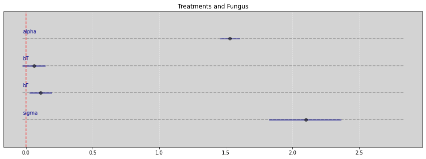
Collider Bias¶
6.21¶
Simulação
Cada ano, \(20\) pessoas nascem com valores de felicidade uniformente distribuídos
Cada ano, cada uma das pessoas envelhece \(1\) ano. A sua felicidade não muda.
Aos \(18\) anos, um indivíduo de casa com a probabilidade de porporcional a sua felicidade.
Uma vez casado, o indivíduo se mantém casado.
Aos 65 anos, o indivíduo deixa a amostra (Vai morar na Espanha)
# Function based in https://github.com/rmcelreath/rethinking/blob/master/R/sim_happiness.R
# Inv_logit R-function in https://stat.ethz.ch/R-manual/R-devel/library/boot/html/inv.logit.html
def inv_logit(x):
return np.exp(x) / (1 + np.exp(x))
def sim_happiness(seed=1977 , N_years=1000 , max_age=65 , N_births=20 , aom=18):
np.random.seed(seed)
df = pd.DataFrame(columns=['age', 'married', 'happiness'])
for i in range(N_years):
# Update age
df['age'] += 1
# Move to Spain when age == max_age
df.drop(df[df['age'] == max_age].index, inplace=True)
# Will marry?
index_unmarried_aom = df.query((f'age>={aom} and married==0')).index.tolist()
weddings = np.random.binomial(1, inv_logit(df.loc[index_unmarried_aom, 'happiness'] - 4))
df.loc[index_unmarried_aom, 'married'] = weddings
# New borns
df_aux = pd.DataFrame(columns=['age', 'married', 'happiness'])
df_aux.loc[:, 'age'] = np.zeros(N_births).astype(int)
df_aux.loc[:, 'married'] = np.zeros(N_births).astype(int)
df_aux.loc[:, 'happiness'] = np.linspace(-2, 2, N_births) # np.random.uniform(0, 1, N_births)
df = df.append(df_aux, ignore_index=True)
return df
df = sim_happiness(seed=1997, N_years=1000)
df.describe(percentiles=[0.055, 0.945], include='all').T
| count | unique | top | freq | mean | std | min | 5.5% | 50% | 94.5% | max | |
|---|---|---|---|---|---|---|---|---|---|---|---|
| age | 1300.0 | 65.0 | 64.0 | 20.0 | NaN | NaN | NaN | NaN | NaN | NaN | NaN |
| married | 1300.0 | 2.0 | 0.0 | 950.0 | NaN | NaN | NaN | NaN | NaN | NaN | NaN |
| happiness | 1300.0 | NaN | NaN | NaN | -8.335213e-17 | 1.214421 | -2.0 | -1.789474 | -1.110223e-16 | 1.789474 | 2.0 |
# Figure 6.21
plt.figure(figsize=(17, 6))
colors = ['white' if is_married == 0 else 'blue' for is_married in df.married ]
plt.scatter(df.age, df.happiness, color=colors)
plt.title('White - Unmarried | Blue - Married')
plt.xlabel('Age')
plt.ylabel('Happiness')
plt.show()
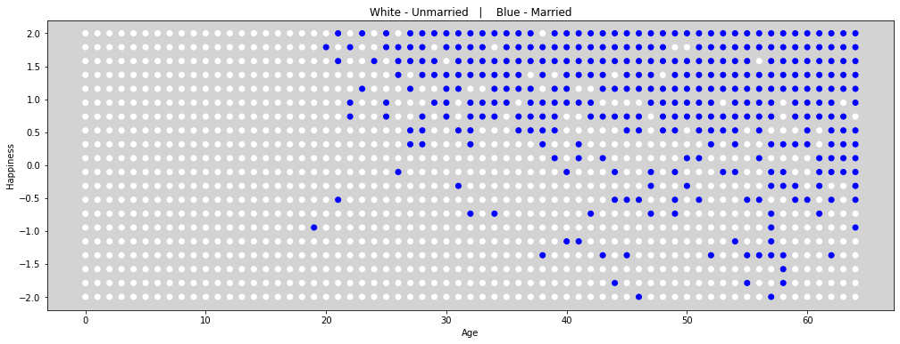
R Code 6.22¶
df2 = df[df.age > 17].copy() # Only adults
df2.loc[:, 'age'] = (df2.age - 18) / (65 - 18)
R Code 6.23¶
Modelo:
\[ happiness \sim Normal(\mu_i, \sigma) \]
\[ \mu_i = \alpha_{_{MID}[i]} + \beta_A \times A_i \]
prioris:
\[ \alpha_{_{MID}[i]} \sim Normal(0, 1)\]
\[ \beta_A \sim Normal(0, 2) \]
\[ \sigma \sim Exponential(1); \]
model = """
data {
int N;
vector[N] age;
vector[N] happiness;
array[N] int married; // Must be integer because this is index to alpha.
}
parameters {
vector[2] alpha; // can also be written like this: real alpha[2] or array[2] int alpha;
real beta_age;
real<lower=0> sigma;
}
model {
vector[N] mu;
for (i in 1:N){
mu[i] = alpha[ married[i] ] + beta_age * age[i];
}
happiness ~ normal(mu, sigma);
// Prioris
alpha ~ normal(0, 1);
beta_age ~normal(0, 2);
sigma ~ exponential(1);
}
"""
data = {
'N': len(df2.happiness.values),
'age': df2.age.values,
'happiness': df2.happiness.values,
'married': df2.married.values + 1 # Because the index in stan starting with 1
}
posteriori = stan.build(model, data=data)
samples = posteriori.sample(num_chains=4, num_samples=1000)
Vide.summary(samples)
| mean | std | 7.0% | 93.0% | |
|---|---|---|---|---|
| alpha[0] | -0.19 | 0.06 | -0.30 | -0.07 |
| alpha[1] | 1.38 | 0.09 | 1.22 | 1.53 |
| beta_age | -0.81 | 0.11 | -1.02 | -0.62 |
| sigma | 0.97 | 0.02 | 0.93 | 1.02 |
Vide.plot_forest(samples, title='Married and Unmarried')
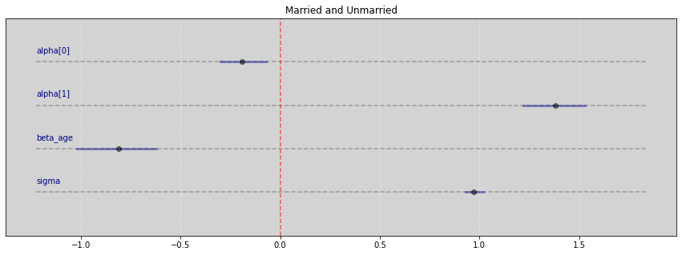
R Code 6.24¶
model = """
data {
int N;
vector[N] age;
vector[N] happiness;
}
parameters {
real alpha;
real beta_age;
real<lower=0> sigma;
}
model {
vector[N] mu;
for (i in 1:N){
mu[i] = alpha + beta_age * age[i];
}
happiness ~ normal(mu, sigma);
alpha ~ normal(0, 1);
beta_age ~ normal(0, 2);
sigma ~ exponential(1);
}
"""
data = {
'N': len(df2.happiness.values),
'happiness': df2.happiness.values,
'age': df2.age.values,
}
posteriori = stan.build(model, data=data)
samples = posteriori.sample(num_chains=4, num_samples=1000)
Vide.summary(samples)
| mean | std | 7.0% | 93.0% | |
|---|---|---|---|---|
| alpha | -0.00 | 0.08 | -0.15 | 0.14 |
| beta_age | 0.00 | 0.14 | -0.23 | 0.27 |
| sigma | 1.22 | 0.03 | 1.17 | 1.27 |
Vide.plot_forest(samples, title='Without married variable')
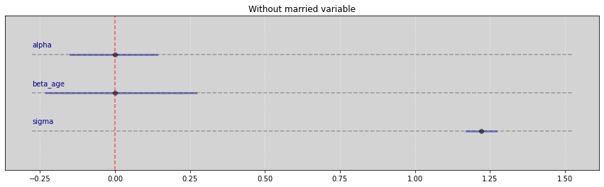
RCode 6.25¶
N = 200 # Qty of triads (G, P, C)
b_GP = 1 # Direct effect of G on P
b_GC = 0 # Direct effect of G on C
b_PC = 1 # Direct effect of P on C
b_U = 2 # Direct effect of U on P and C
R Code 6.26¶
np.random.seed(3)
U = 2 * np.random.binomial(n=1, p=0.5, size=N) - 1 # {-1, 1}
# U = np.random.normal(0, 1, N) # Simulation more realistic example
G = np.random.normal(0, 1, size=N) # Has not influence
P = np.random.normal(b_GP*G + b_U*U, 1, size=N)
C = np.random.normal(b_PC*P + b_GC*G + b_U*U, 1, size=N)
d = pd.DataFrame.from_dict({'C':C, 'P':P, 'G':G, 'U':U})
d.head()
| C | P | G | U | |
|---|---|---|---|---|
| 0 | 0.986995 | 1.197787 | -0.795915 | 1 |
| 1 | 5.715446 | 3.573636 | 0.072746 | 1 |
| 2 | -4.387763 | -3.131400 | -0.261240 | -1 |
| 3 | 2.598454 | 0.462321 | -1.298047 | 1 |
| 4 | 6.614388 | 4.931193 | 2.676112 | 1 |
R Code 6.27¶
# C ~ P + G
model = """
data {
int N;
vector[N] C;
vector[N] P;
vector[N] G;
}
parameters {
real alpha;
real b_PC;
real b_GC;
real<lower=0> sigma;
}
model {
vector[N] mu;
for (i in 1:N){
mu[i] = alpha + b_PC*P[i] + b_GC*G[i];
}
C ~ normal(mu, sigma);
alpha ~ normal(0, 1);
b_PC ~ normal(0, 1);
b_GC ~ normal(0, 1);
sigma ~ exponential(1);
}
"""
data = {
'N': len(d.C.values),
'C': d.C.values,
'P': d.P.values,
'G': d.G.values,
}
posteriori = stan.build(model, data=data)
samples = posteriori.sample(num_chains=4, num_samples=1000)
Vide.summary(samples)
| mean | std | 7.0% | 93.0% | |
|---|---|---|---|---|
| alpha | 0.07 | 0.10 | -0.10 | 0.24 |
| b_PC | 1.77 | 0.04 | 1.70 | 1.84 |
| b_GC | -0.82 | 0.10 | -1.01 | -0.65 |
| sigma | 1.33 | 0.07 | 1.20 | 1.45 |
Vide.plot_forest(samples)
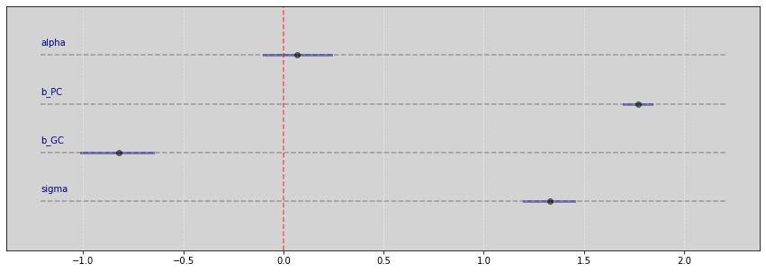
# Figure 6.5
plt.figure(figsize=(17, 6))
colors = ['black' if u <= 0 else 'blue' for u in U] # Unobserved
x = np.linspace(-3, 4)
y = np.mean(samples['alpha']) + np.mean(samples['b_GC']) * x
plt.plot(x, y, c='k')
plt.scatter(G, C, c=colors)
plt.xlabel('Granparent Education (G)')
plt.ylabel('GranChild Education (C)')
plt.title('Educations - Bias Collider')
plt.show()
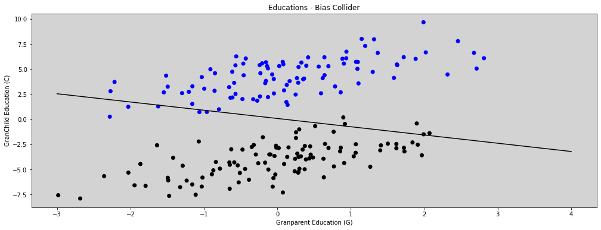
R Code 6.28¶
model = """
data {
int N;
vector[N] C;
vector[N] P;
vector[N] G;
vector[N] U;
}
parameters {
real alpha;
real b_PC;
real b_GC;
real b_U;
real<lower=0> sigma;
}
model {
vector[N] mu;
for (i in 1:N){
mu[i] = alpha + b_PC*P[i] + b_GC*G[i] + b_U*U[i];
}
C ~ normal(mu, sigma);
alpha ~ normal(0, 1);
b_GC ~ normal(0, 1);
b_PC ~ normal(0, 1);
b_U ~ normal(0, 1);
sigma ~ exponential(1);
}
"""
data = {
'N': len(d.C.values),
'C': d.C.values,
'P': d.P.values,
'G': d.G.values,
'U': d.U.values,
}
posteriori = stan.build(model, data=data)
samples = posteriori.sample(num_chains=4, num_samples=1000)
Vide.summary(samples)
| mean | std | 7.0% | 93.0% | |
|---|---|---|---|---|
| alpha | 0.07 | 0.07 | -0.06 | 0.21 |
| b_PC | 1.00 | 0.07 | 0.86 | 1.12 |
| b_GC | -0.03 | 0.10 | -0.22 | 0.15 |
| b_U | 1.97 | 0.17 | 1.68 | 2.27 |
| sigma | 1.02 | 0.05 | 0.93 | 1.11 |
Vide.plot_forest(samples)
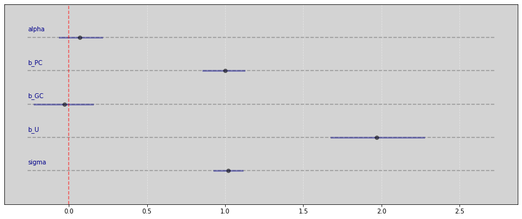
R Code 6.29¶
Reference: ksachdeva
dag_6_1 = CausalGraphicalModel(
nodes=["C", "U", "B", "A", "X", "Y"],
edges=[
("U", "X"),
("A", "U"),
("A", "C"),
("C", "Y"),
("U", "B"),
("C", "B"),
("X", "Y"),
],
)
pgm = daft.PGM()
coordinates = {
"U": (0, 2),
"C": (4, 2),
"A": (2, 3),
"B": (2, 1),
"X": (0, 0),
"Y": (4, 0),
}
for node in dag_6_1.dag.nodes:
pgm.add_node(node, node, *coordinates[node])
for edge in dag_6_1.dag.edges:
pgm.add_edge(*edge)
pgm.render()
plt.show()
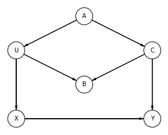
all_adjustment_sets = dag_6_1.get_all_backdoor_adjustment_sets("X", "Y")
for s in all_adjustment_sets:
if all(not t.issubset(s) for t in all_adjustment_sets if t != s):
if s != {"U"}:
print(s)
frozenset({'C'})
frozenset({'A'})
R Code 6.30¶
dag_6_2 = CausalGraphicalModel(
nodes=['S', 'A', 'M', 'W', 'D'],
edges=[
('S','W'),
('S','M'),
('S','A'),
('A','M'),
('A','D'),
('M','D'),
('W','D'),
],
)
# Drawing the DAG
pgm = daft.PGM()
coordinates = {
"S": (0, 2),
"A": (0, 0),
"M": (1, 1),
"W": (2, 2),
"D": (2, 0),
}
for node in dag_6_2.dag.nodes:
pgm.add_node(node, node, *coordinates[node])
for edge in dag_6_2.dag.edges:
pgm.add_edge(*edge)
pgm.render()
plt.show()
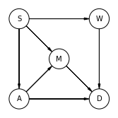
# R Code 6.30
all_adjustment_sets = dag_6_2.get_all_backdoor_adjustment_sets("W", "D")
for s in all_adjustment_sets:
if all(not t.issubset(s) for t in all_adjustment_sets if t != s):
print(s)
frozenset({'A', 'M'})
frozenset({'S'})
R Code 6.31¶
Reference: Fehiepsi - Numpyro
all_independencies = dag_6_2.get_all_independence_relationships()
for s in all_independencies:
if all(
t[0] != s[0] or t[1] != s[1] or not t[2].issubset(s[2])
for t in all_independencies
if t != s
):
print(s)
('M', 'W', {'S'})
('W', 'A', {'S'})
('S', 'D', {'W', 'A', 'M'})